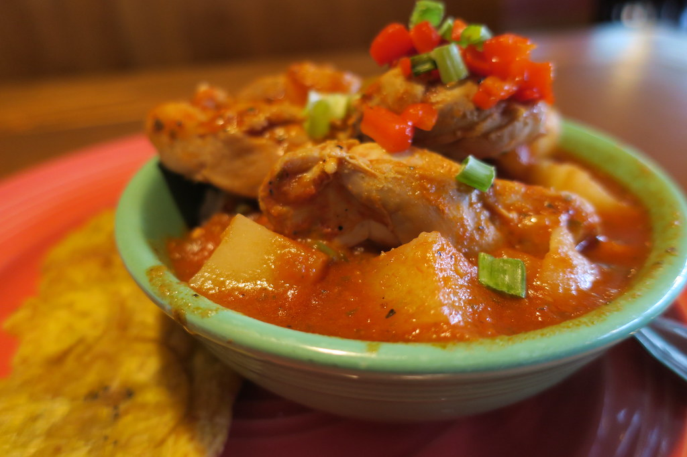

CHICKEN AFRITADA

Description
CHICKEN AFRITADA
Chicken afritada is a Filipino chicken stew cooked in tomato sauce with potatoes, carrots, bell peppers, peas, and sometimes hotdogs.
It tastes savory, slightly sweet, and tomato-rich. It is usually served with steamed
Ingredients
- Chicken
- Tomato Sauce
- Bay Leaves
- Potato
- Carrot
- Hotdog
- Green Peas
- Red Onion
- Garlic
- Chicken Broth
- Brown Sugar
- Cooking Oil
- Salt
- Ground Black Pepper
Steps to Cook Chicken Afritada
- Heat the oil in a cooking pot, saute the onion and garlic until the onion softens.
- Add the chicken and cook for 30-40 seconds, then turn each piece over and cook the other side for another 30 seconds until golden brown.
- Pour in the tomato sauce and chicken broth, cover the pot, and let it boil.
- Add the dried bay leaves, lower the heat, and cook covered for 30 minutes, remember adding more broth or water when it starts to dry out.
- Add the carrot, along with the hotdogs when you are using them, and cook for 3 minutes.
- Add the potato, cover, and cook for 8 minutes, then stir in the green peas and cook for 2 more minutes.
- Season with salt and ground black pepper to taste, or use fish sauce in place of the salt.
- Give everything a gentle stir, then serve hot with rice.
Back to Home